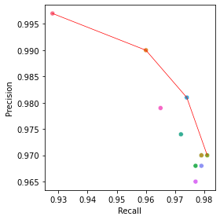
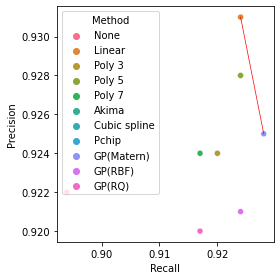

2. Exploratory data analysis¶
In this notebook I explore the data in further detail
2.1. Upload packages and import data¶
import pandas as pd
import numpy as np
import copy
from sklearn.metrics import r2_score, mean_squared_error, mean_absolute_error
import matplotlib.pyplot as plt
import seaborn as sns
import scipy.stats as stats
import warnings
warnings.filterwarnings('ignore')
pd.set_option('display.max_rows', None)
pd.set_option('display.max_columns', None)
%matplotlib inline
# Upload datasets
df = pd.read_csv('~/OneDrive - University of Exeter/Desktop/PhD/Projects/interpolation-for-hypo-detection/dexcom-maths-exploration/data/tidy_data/interp_dataset.csv')
df.dropna(subset=['glc'], inplace=True)
aligned_results = pd.read_csv('~/OneDrive - University of Exeter/Desktop/PhD/Projects/interpolation-for-hypo-detection/dexcom-maths-exploration/code/raw_code/aligned_results_rounded.csv')
results_frame = pd.read_csv('~/OneDrive - University of Exeter/Desktop/PhD/Projects/interpolation-for-hypo-detection/dexcom-maths-exploration/code/raw_code/confusion_matrix_hypos.csv')
# Define interp methods
cols = ['cut_glc', 'pchip', 'linear',
'cubicspline', 'akima', 'polynomial_3', 'polynomial_5', 'polynomial_7',
'matern', 'rq', 'rbf']
2.2 Statistical significance with chi2 test¶
results_frame.head()
| method | lv | TP | FN | FP | recall | prec | csi | |
|---|---|---|---|---|---|---|---|---|
| 0 | cut_glc | all | 397 | 31 | 1 | 0.928 | 0.997 | 0.925 |
| 1 | linear | all | 411 | 17 | 4 | 0.960 | 0.990 | 0.951 |
| 2 | rq | all | 413 | 15 | 9 | 0.965 | 0.979 | 0.945 |
| 3 | akima | all | 416 | 12 | 11 | 0.972 | 0.974 | 0.948 |
| 4 | pchip | all | 417 | 11 | 8 | 0.974 | 0.981 | 0.956 |
conf_matrix = results_frame[['method', 'lv', 'TP', 'FN', 'FP']]
p_list = []
for i, row in conf_matrix.iterrows():
data = pd.DataFrame([row.values, ['glc', 'glc', (row.TP + row.FN), 0, 0]])
data.set_index([0, 1], inplace=True)
try:
V, p, dof, expected = stats.chi2_contingency(data)
p_list.append([row['lv'], row.method, p])
except:
print('0 error')
continue
0 error
pd.DataFrame(p_list, columns=['hypo', 'method',
'p-value']).sort_values(['hypo', 'method'])
| hypo | method | p-value | |
|---|---|---|---|
| 11 | all | akima | 9.955542e-06 |
| 8 | all | cubicspline | 1.750492e-05 |
| 0 | all | cut_glc | 6.289096e-08 |
| 5 | all | linear | 2.339105e-05 |
| 23 | all | matern | 1.077659e-05 |
| 2 | all | pchip | 7.225001e-05 |
| 14 | all | polynomial_3 | 1.750492e-05 |
| 17 | all | polynomial_5 | 2.915644e-05 |
| 20 | all | polynomial_7 | 6.462125e-06 |
| 29 | all | rbf | 3.982394e-06 |
| 26 | all | rq | 5.625183e-06 |
| 12 | lv1 | akima | 3.114020e-09 |
| 9 | lv1 | cubicspline | 1.134149e-09 |
| 1 | lv1 | cut_glc | 2.403270e-11 |
| 6 | lv1 | linear | 4.980303e-09 |
| 24 | lv1 | matern | 3.345506e-09 |
| 3 | lv1 | pchip | 4.980303e-09 |
| 15 | lv1 | polynomial_3 | 1.134149e-09 |
| 18 | lv1 | polynomial_5 | 3.114020e-09 |
| 21 | lv1 | polynomial_7 | 6.582361e-10 |
| 30 | lv1 | rbf | 1.222841e-09 |
| 27 | lv1 | rq | 4.127257e-10 |
| 13 | lv2 | akima | 3.323565e-04 |
| 10 | lv2 | cubicspline | 8.471321e-05 |
| 7 | lv2 | linear | 1.508492e-04 |
| 25 | lv2 | matern | 1.354055e-04 |
| 4 | lv2 | pchip | 7.163967e-05 |
| 16 | lv2 | polynomial_3 | 8.471321e-05 |
| 19 | lv2 | polynomial_5 | 1.426429e-04 |
| 22 | lv2 | polynomial_7 | 1.426429e-04 |
| 31 | lv2 | rbf | 3.652605e-04 |
| 28 | lv2 | rq | 6.385274e-05 |
2.3 Distribution in duration of episodes¶
# Convert the duration of hypos to minutes
aligned_results['5_min_diff'] = pd.to_timedelta(aligned_results['5_min_diff']).astype('timedelta64[m]')
# Only need one method from aligned_results
df_results = aligned_results.loc[aligned_results['col']=='cut_glc']
# Set up a new dataframe for comparing the describe() metrics for each level
df_duration = pd.DataFrame()
df_duration['all'] = df_results['5_min_diff'].describe()
df_duration['lv1'] = df_results[df_results['5_min_lv2']==False]['5_min_diff'].describe()
df_duration['lv2'] = df_results[df_results['5_min_lv2']==True]['5_min_diff'].describe()
df_duration
| all | lv1 | lv2 | |
|---|---|---|---|
| count | 428.000000 | 264.000000 | 164.000000 |
| mean | 77.228972 | 50.435606 | 120.359756 |
| std | 86.430240 | 50.111090 | 111.727643 |
| min | 15.000000 | 15.000000 | 15.000000 |
| 25% | 25.000000 | 25.000000 | 48.750000 |
| 50% | 45.000000 | 30.000000 | 77.500000 |
| 75% | 95.000000 | 55.000000 | 135.000000 |
| max | 635.000000 | 405.000000 | 635.000000 |
# Number of hyps over 120 mins
df_results[df_results['5_min_diff']>120]['ID'].count()
71
# Prepare data for a seaborn boxplot by renaming variables
df_results['Level'] = df_results['5_min_lv2'].replace({True: 'Level 2', False:
'Level 1'})
# Copy dataframe to add an all column to figure
df_all = copy.copy(df_results)
df_all['Level'] = 'All'
df_results_concat = pd.concat([df_results, df_all])
fig, ax = plt.subplots(figsize=(5,7))
ax = sns.boxplot('Level', '5_min_diff', data=df_results_concat, order=['All', 'Level 1', 'Level 2'])#, hue='lv2')
ax.set(xlabel='Type of hypo', ylabel='Duration (mins)')
fig.savefig('length_of_hypos_boxplot.png')
[Text(0.5, 0, 'Type of hypo'), Text(0, 0.5, 'Duration (mins)')]
2.4. Calculate RMSE¶
def metrics_calc(df, col, base_col):
'''
Evaluate each method using R2, RMSE and MAE and add to dataframe
'''
return {'Name':col,'R2':r2_score(df[base_col], df[col]),
'RMSE':mean_squared_error(df[base_col], df[col], squared=True),
'MAE':mean_absolute_error(df[base_col], df[col])}
# Delete 15 min column and leave only interp methods
df_rmse = df[pd.isnull(df['cut_glc'])].drop(columns=['cut_glc'])
df_rmse.dropna(inplace=True)
# Also delete from list of methods
interp_methods = ['pchip', 'linear', 'cubicspline', 'akima', 'polynomial_3',
'polynomial_5', 'polynomial_7', 'matern', 'rq', 'rbf']
# Declare list for results
frame_results = []
# Call metrics_calc on all of the methods to calculate accuracy
for col in interp_methods:
frame = frame_results.append(metrics_calc(df_rmse, col, 'glc'), ignore_index=True)
# Convert to dataframe
frame = pd.DataFrame(frame_results, columns=['Name', 'R2', 'RMSE', 'MAE'])
frame.sort_values('RMSE')
| Name | R2 | RMSE | MAE | |
|---|---|---|---|---|
| 8 | rq | 0.995523 | 0.088461 | 0.127923 |
| 0 | pchip | 0.995306 | 0.092755 | 0.127473 |
| 3 | akima | 0.995303 | 0.092800 | 0.127996 |
| 1 | linear | 0.995277 | 0.093318 | 0.137190 |
| 2 | cubicspline | 0.994968 | 0.099420 | 0.128674 |
| 4 | polynomial_3 | 0.994968 | 0.099420 | 0.128674 |
| 5 | polynomial_5 | 0.994674 | 0.105224 | 0.132802 |
| 9 | rbf | 0.994206 | 0.114474 | 0.141112 |
| 6 | polynomial_7 | 0.994138 | 0.115829 | 0.137596 |
| 7 | matern | 0.994120 | 0.116186 | 0.139742 |
# Calculate metrics_calc for hypoglycaemia threshold
df_hypo = df_rmse[(df_rmse.glc<4.5)&(df_rmse.glc>2.5)]
# Declare list for results
results_hypo = []
# Loop through each method to calculate accuracy vs 5 min readings
for col in interp_methods:
frame_hypo = results_hypo.append(metrics_calc(df_hypo, col, 'glc'),
ignore_index=True)
# Convert to dataframe
frame_hypo = pd.DataFrame(results_hypo, columns=['Name', 'R2', 'RMSE', 'MAE'])
frame_hypo.sort_values('RMSE')
| Name | R2 | RMSE | MAE | |
|---|---|---|---|---|
| 2 | cubicspline | 0.864649 | 0.034955 | 0.103256 |
| 4 | polynomial_3 | 0.864649 | 0.034955 | 0.103256 |
| 7 | matern | 0.863851 | 0.035161 | 0.105619 |
| 0 | pchip | 0.863360 | 0.035287 | 0.104982 |
| 3 | akima | 0.860795 | 0.035950 | 0.105397 |
| 5 | polynomial_5 | 0.859898 | 0.036182 | 0.106036 |
| 9 | rbf | 0.857435 | 0.036818 | 0.110144 |
| 6 | polynomial_7 | 0.855503 | 0.037316 | 0.108753 |
| 8 | rq | 0.852004 | 0.038220 | 0.107797 |
| 1 | linear | 0.837577 | 0.041946 | 0.118415 |
2.5. Precision-recall Pareto front plots¶
# Replace labels for legend of plot
names = {'cut_glc':'None', 'linear':'Linear',
'absexp':'GP(Abs exp)', 'akima':'Akima',
'matern':'GP(Matern)', 'pchip':'Pchip',
'rbf':'GP(RBF)', 'cubicspline':'Cubic spline',
'polynomial_3':'Poly 3', 'rq': 'GP(RQ)', 'polynomial_5':'Poly 5',
'polynomial_7':'Poly 7'}
results_frame.method = results_frame.method.replace(names)
# Order of legend
hue_order = ['None', 'Linear', 'Poly 3', 'Poly 5', 'Poly 7', 'Akima',
'Cubic spline', 'Pchip', 'GP(Matern)', 'GP(RBF)', 'GP(RQ)']
# Rename columns
results_frame.columns = ['Method', 'lv', 'TP', 'FN', 'FP', 'Recall', 'Precision', 'CSI']
results_frame
| Method | lv | TP | FN | FP | Recall | Precision | CSI | |
|---|---|---|---|---|---|---|---|---|
| 0 | None | all | 397 | 31 | 1 | 0.928 | 0.997 | 0.925 |
| 1 | Linear | all | 411 | 17 | 4 | 0.960 | 0.990 | 0.951 |
| 2 | GP(RQ) | all | 413 | 15 | 9 | 0.965 | 0.979 | 0.945 |
| 3 | Akima | all | 416 | 12 | 11 | 0.972 | 0.974 | 0.948 |
| 4 | Pchip | all | 417 | 11 | 8 | 0.974 | 0.981 | 0.956 |
| 5 | GP(RBF) | all | 418 | 10 | 15 | 0.977 | 0.965 | 0.944 |
| 6 | Poly 7 | all | 418 | 10 | 14 | 0.977 | 0.968 | 0.946 |
| 7 | GP(Matern) | all | 419 | 9 | 14 | 0.979 | 0.968 | 0.948 |
| 8 | Cubic spline | all | 419 | 9 | 13 | 0.979 | 0.970 | 0.950 |
| 9 | Poly 3 | all | 419 | 9 | 13 | 0.979 | 0.970 | 0.950 |
| 10 | Poly 5 | all | 420 | 8 | 13 | 0.981 | 0.970 | 0.952 |
| 11 | None | lv1 | 236 | 28 | 20 | 0.894 | 0.922 | 0.831 |
| 12 | GP(RQ) | lv1 | 242 | 22 | 21 | 0.917 | 0.920 | 0.849 |
| 13 | Poly 7 | lv1 | 242 | 22 | 20 | 0.917 | 0.924 | 0.852 |
| 14 | Cubic spline | lv1 | 243 | 21 | 20 | 0.920 | 0.924 | 0.856 |
| 15 | Poly 3 | lv1 | 243 | 21 | 20 | 0.920 | 0.924 | 0.856 |
| 16 | GP(RBF) | lv1 | 244 | 20 | 21 | 0.924 | 0.921 | 0.856 |
| 17 | Akima | lv1 | 244 | 20 | 19 | 0.924 | 0.928 | 0.862 |
| 18 | Poly 5 | lv1 | 244 | 20 | 19 | 0.924 | 0.928 | 0.862 |
| 19 | Pchip | lv1 | 244 | 20 | 18 | 0.924 | 0.931 | 0.865 |
| 20 | Linear | lv1 | 244 | 20 | 18 | 0.924 | 0.931 | 0.865 |
| 21 | GP(Matern) | lv1 | 245 | 19 | 20 | 0.928 | 0.925 | 0.863 |
| 22 | None | lv2 | 142 | 22 | 0 | 0.866 | 1.000 | 0.866 |
| 23 | Linear | lv2 | 150 | 14 | 3 | 0.915 | 0.980 | 0.898 |
| 24 | GP(RQ) | lv2 | 152 | 12 | 7 | 0.927 | 0.956 | 0.889 |
| 25 | Pchip | lv2 | 154 | 10 | 9 | 0.939 | 0.945 | 0.890 |
| 26 | Akima | lv2 | 156 | 8 | 8 | 0.951 | 0.951 | 0.907 |
| 27 | Cubic spline | lv2 | 157 | 7 | 12 | 0.957 | 0.929 | 0.892 |
| 28 | Poly 3 | lv2 | 157 | 7 | 12 | 0.957 | 0.929 | 0.892 |
| 29 | GP(Matern) | lv2 | 157 | 7 | 11 | 0.957 | 0.935 | 0.897 |
| 30 | Poly 5 | lv2 | 158 | 6 | 12 | 0.963 | 0.929 | 0.898 |
| 31 | Poly 7 | lv2 | 158 | 6 | 12 | 0.963 | 0.929 | 0.898 |
| 32 | GP(RBF) | lv2 | 158 | 6 | 10 | 0.963 | 0.940 | 0.908 |
# Create subsets of dataframe for all levels of hypos
lv_all = results_frame.loc[results_frame['lv']=='all']
lv1 = results_frame.loc[results_frame['lv']=='lv1']
lv2 = results_frame.loc[results_frame['lv']=='lv2']
def identify_pareto(scores):
'''
Function to calculate Pareto front of methods from Python for Healthcare by
Mike Allen
'''
# Count number of items
population_size = scores.shape[0]
# Create a NumPy index for scores on the pareto front (zero indexed)
population_ids = np.arange(population_size)
# Create a starting list of items on the Pareto front
# All items start off as being labelled as on the Parteo front
pareto_front = np.ones(population_size, dtype=bool)
# Loop through each item. This will then be compared with all other items
for i in range(population_size):
# Loop through all other items
for j in range(population_size):
# Check if our 'i' pint is dominated by out 'j' point
if all(scores[j] >= scores[i]) and any(scores[j] > scores[i]):
# j dominates i. Label 'i' point as not on Pareto front
pareto_front[i] = 0
# Stop further comparisons with 'i' (no more comparisons needed)
break
# Return ids of scenarios on pareto front
return population_ids[pareto_front]
def compute_pareto_coords(dataframe):
'''
Computes the precision-recall coordinates to plot on the plots using
identify_pareto
'''
pareto = identify_pareto(np.array(dataframe[['Recall', 'Precision']]))
pareto_front = np.array(dataframe[['Recall', 'Precision']])[pareto]
pareto_front_df = pd.DataFrame(pareto_front)
pareto_front_df.sort_values(0, inplace=True)
pareto_front = pareto_front_df.values
x_pareto = pareto_front[:, 0]
y_pareto = pareto_front[:, 1]
return x_pareto, y_pareto
# Get pareto coordinates to plot on fig
x_pareto, y_pareto = compute_pareto_coords(lv_all)
x_pareto1, y_pareto1 = compute_pareto_coords(lv1)
x_pareto2, y_pareto2 = compute_pareto_coords(lv2)
# Plot precision-recall plot with Pareto front as red line
fig, (ax1, ax2, ax3) = plt.subplots(3, 1, figsize=(6, 15))
# Plot all hypos
ax1.plot(x_pareto, y_pareto, color='r', linewidth=0.7)
sns.scatterplot(y=lv_all.Precision, x=lv_all.Recall, hue=lv_all['Method'],
hue_order=hue_order, ax=ax1)
# Plot level 1 hypos
ax2.plot(x_pareto1, y_pareto1, color='r', linewidth=0.7)
sns.scatterplot(y=lv1.Precision, x=lv1.Recall, hue=lv1['Method'],
hue_order=hue_order, ax=ax2)
# Plot level 2 hypos
ax3.plot(x_pareto2, y_pareto2, color='r', linewidth=0.5)
sns.scatterplot(y=lv2.Precision, x=lv2.Recall, hue=lv2['Method'],
hue_order=hue_order, ax=ax3)
# Remove legends
ax1.get_legend().remove()
ax3.get_legend().remove()
# Save figure
fig.savefig('pareto_3.png')
# Plot all hypos
fig, ax = plt.subplots(1, figsize=(4, 4))
sns.scatterplot(y=lv_all.Precision, x=lv_all.Recall, hue=lv_all['Method'], hue_order=hue_order, ax=ax)
ax.plot(x_pareto, y_pareto, color='r', linewidth=0.7)
ax.get_legend().remove()
fig.tight_layout()
fig.savefig('pareto_all_example.png')

# Plote level 1 hypos
fig, ax = plt.subplots(1, figsize=(4, 4))
sns.scatterplot(y=lv1.Precision, x=lv1.Recall, hue=lv1['Method'], ax=ax,
hue_order=hue_order)
ax.plot(x_pareto1, y_pareto1, color='r', linewidth=0.7)
#ax.get_legend().remove()
fig.tight_layout()
fig.savefig('pareto_lv1.png')

# Plote level 2 hypos
fig, ax = plt.subplots(1, figsize=(4, 4))
ax.plot(x_pareto2, y_pareto2, color='r', linewidth=0.7)
sns.scatterplot(y=lv2.Precision, x=lv2.Recall, hue=lv2['Method'], ax=ax,
hue_order=hue_order)
ax.get_legend().remove()
fig.tight_layout()
fig.savefig('pareto_lv2.png')